SK8 Low Black True White
Descrição:
O Sk8-Low, uma versão do lendário tênis de cano alto da Vans, é produzido com
uma variedade de cores clássicas para fornecer uma estética Sk8-Hi® familiar em um tênis de cano baixo.
Com cabedal durável de lona e camurça, assim como sua contraparte mais alta, este estilo com cadarço também
inclui biqueiras reforçadas, colarinhos acolchoados de suporte e sola de borracha waffle exclusiva.
R$399,99